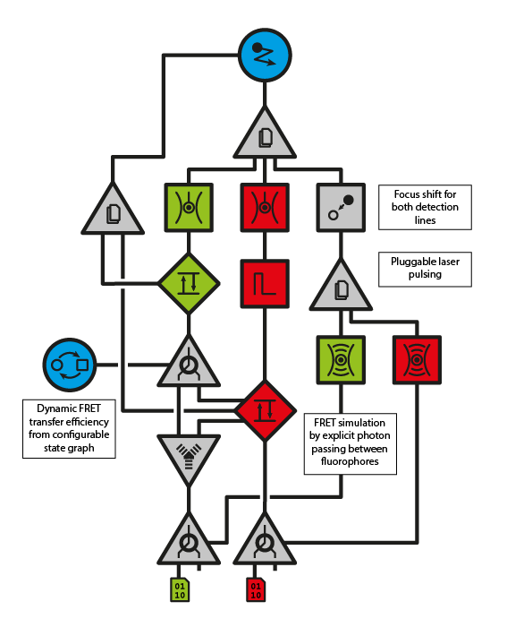

Architecture¶
This section describes the overall design philosophy and archtitecture of SiMFS-Tk.
Components¶
SiMFS-Tk is a collection of components, which are basically individual pieces
of sotware that perform one step of a single molecule simulation. They read
and write one or more plain binary data streams and can be configured with
short json documents (see JSON). Each component has a small
command line program to control it. The executables read configuration form
stdin, open the necessary files and / or pipes and write a complete
parameter log to stdout before running the actual task. A component either
produces or transforms data streams. Data streams are in the simplest case
plain binary files on disk.
$ simfs_xxx < params.json > log.json
The component interface is intentionally kept simple. They will do their best not to crash due to erroneus input, but won’t do any parameter checking or input validation. All a component can do is read, process and write data streams regardless of their origin and destination. Size, start, end or any other information about the stream data is no known to the components.
JSON¶
Json (Javascript Object Notation) is a leightweight structured plain text data format. It consists of a (potentially nested) set of key, value pairs and supports strings, numebers and lists. A key-value-mapping (object) is enclosed in curly braces:
{
"some_number": 42,
"some_name": "Hello there",
"some_list": [1, 2, 3],
"some_onbject": {
"nested_number": 21,
"nested_name": "structure, yay!"
}
}
Json is used throughout SiMFS-Tk to communicate simulation parameters.
Note
Json is incredibly widespread, so it is very likely, that your anylsis software of choice supports it in one or the other way. However, you can always edit the default parameter jsons provided by each component with a plain text editor.
Pipelines¶
To achieve complex simulation tasks, multiple components have to work together. Since all components really do is reading and writing files, it is easy to just apply component after component to a set of files until the final result is produced. This approach makes iterating single steps in the process easy, since all intermediate data is preserved and can be reused time and again.
Disadvantages of this approach is the slow speed and potential large amount of
data that will be written to disk. On UNIX systems this can be circumvented by
using pipes. In the UNIX world, pipes can be used to allow small tools to
talk to each other and solve complex tasks in a single run. Output from one
tool is passed to the next via the pipe and allows both programs to work in
parallel. The standard pipe is denoted | and connects stdout and
stdin of two prgrams:
$ ls | grep .*.dat # searches the output of ls with grep for .dat files.
Named pipes work the same way but are actual entries in the filesystem, just as a real file. Due to the UNIX notion of “everything is a file”, programs reading and writing unix files (such as SiMFS-Tk components) do not care wether they work with pipes or files. In that way, it is possible to run multiple components in parallel that read and write to named pipes.
Note
Data is just handed via the pipe and is lost for further analysis if no other way of saving it to disk is in place.
UNIX named pipes are created using mkfifo.
Data¶
SiMFS-Tk works with binary data streams for efficiency. Fortunately the data is incredibly simple: All data is standard double precision IEEE 754 floating point numbers, so most anaylsis software will have a way of reading and writing compatible data. A little complexity is still in the grouping of numbers that represent a data entry: Molecular coordinates have four numbers, timed values (focus functions, FRET efficiencies, etc.) have two and simple timestamps have one.
| Datatype | Size | Layout |
|---|---|---|
| Coordinate | 4 x 8 byte | (x, y, z, time) |
| Timed Value | 2 x 8 byte | (value, time) |
| Timetag | 1 x 8 byte | (time) |
Note
Throughout SiMFS-Tk parameters and data streams, prefixless SI base units like meters, seconds, and Watts are used to make these values least ambiguous.
Python driver¶
Due to the simple command line interface it is simple to call SiMFS-Tk components from other software. This is what the python driver that is included in the repository does. It provides a python interface to configure and start subprocesses running the SiMFS-Tk component excecutables. In addition it handles the required named pipes to connect components and starts the processes asynchronously preventing deadlocks.
Warning
The python driver will be released soon.